plotfunc3d((sin(x)*sin(y))/(x*y), x=-10..10, y=-10..10)
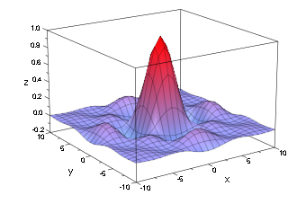
plotfunc3d(sqrt(x*y), x=-10..10, y=-10..10)
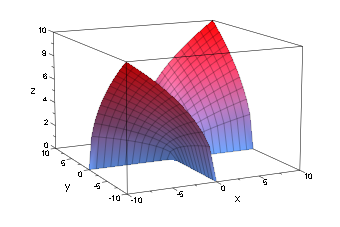
plotfunc3d(sqrt(x*y), x=-20..20, y=-20..20)
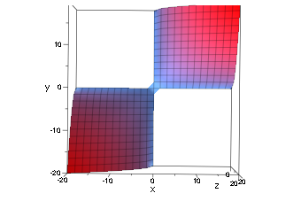
plotfunc3d(ln(9-x^2-(9*y^2)), x=-10..10, y=-10..10)
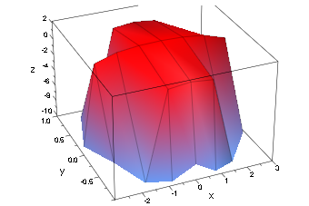
plotfunc3d(ln(9-x^2-(9*y^2)), x=-100..100, y=-100..100)
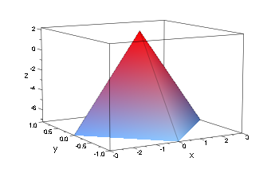
plotfunc2d(ln(x), x=-10..10)
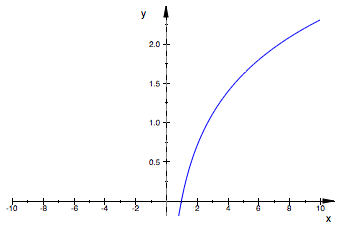
plotfunc3d(sqrt(x+y+1)/x-1, x=-10..10, y=-10..10)
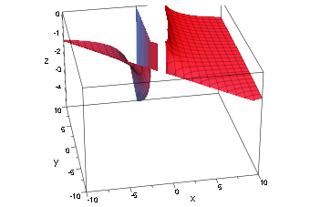
plotfunc3d(sqrt(x+y+1)/x-1, x=-100..100, y=-100..100)
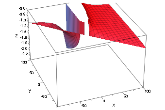
plotfunc3d(x*ln(y*2-x), x=-10..10, y=-10..10)
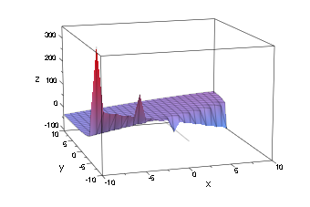
plotfunc2d(y*2-x, x=-10..10, y=-10..10)
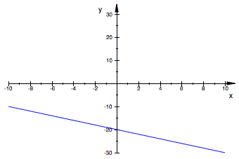
plotfunc2d(y^2-x, x=-10..10, y=-10..10)
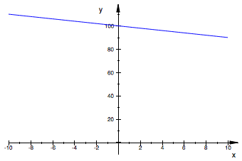
plotfunc3d(x*ln(y^2-x), x=-10..10, y=-10..10)
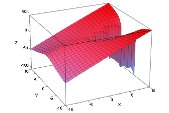
plotfunc3d(ln(9-x^2-(9*y^2)), x=-3..3, y=-3..3)
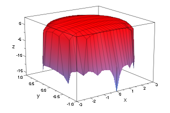
plotfunc2d(x^2 + 9* y^2 -9 , x=-10..10, y=-10..10)
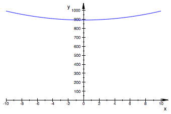
plotfunc2d(x^2 - y^2, x=-10..10, y=-10..10)
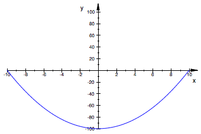
a:= x^2 - y^2 = 0
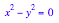
plot(a)
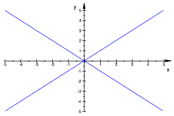
plot(((1/9)*x^2)+y^2 = 1)
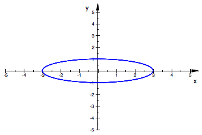
plotfunc3d(sqrt(1-x^2)-sqrt(1-y^2), x=-10..10, y=-10..10)
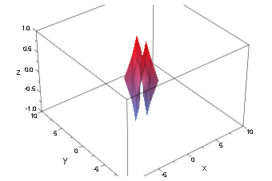
plotfunc3d(sqrt(y-x^2)/(1-x^2), x=-1..1, y=-10..10)
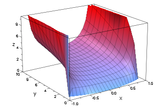
plot(y = arcsin(x))
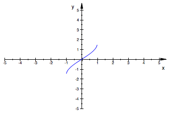
PI/2
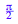
simplify(%)

float(%)
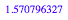
arcsin(1)

arcsin(2)
plot(x^2+y^2-2)
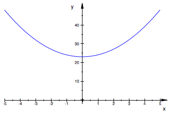
plotfunc3d(arcsin(x^2 + y^2 - 2), x=-10..10, y=-10..10)
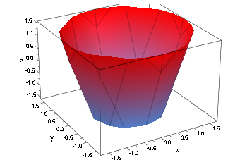
plotfunc3d(10 - 4*x - 5*y, x=-10..10, y=-10..10)
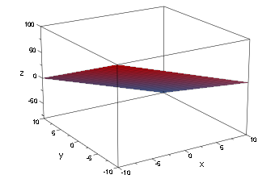
plotfunc3d(E^(-y), x=-10..10, y=-10..10)
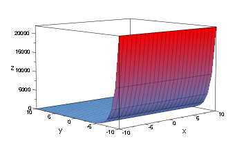
plot(E^(-x))
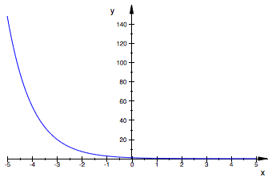
plot(E^x)

plot(ln(x))

plotfunc3d(9-x^2-(9*y^2), x=-10..10, y=-10..10)
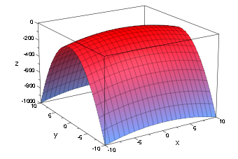
abs(-10)
plotfunc3d(abs(x*y), x=-10..10, y=-10..10)
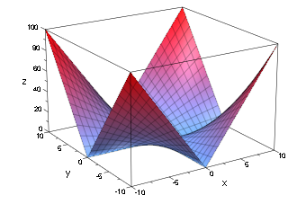
plotfunc3d(1/(1+x^2+y^2), x=-10..10, y=-10..10)
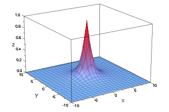
plotfunc3d((x^2 - y^2)^2, x=-10..10, y=-10..10)
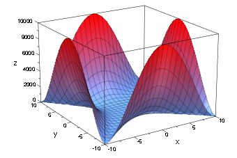
plotfunc3d((x-y)^2, x=-10..10, y=-10..10)
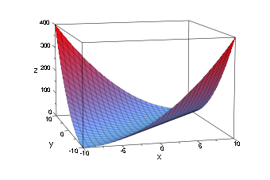
plot(x^2 + y^2 -2)
plot(x^2 + y^2 = 2)
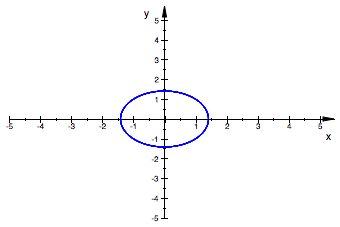
plotfunc3d(x^3 - y, x=-10..10, y=-10..10)
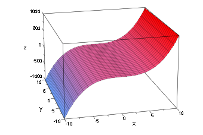
plotfunc3d(x^3 - y - z, x=-10..10, y=-10..10, z=-10..10)
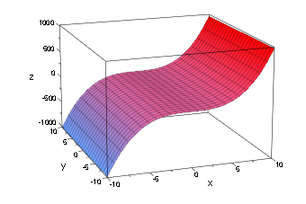